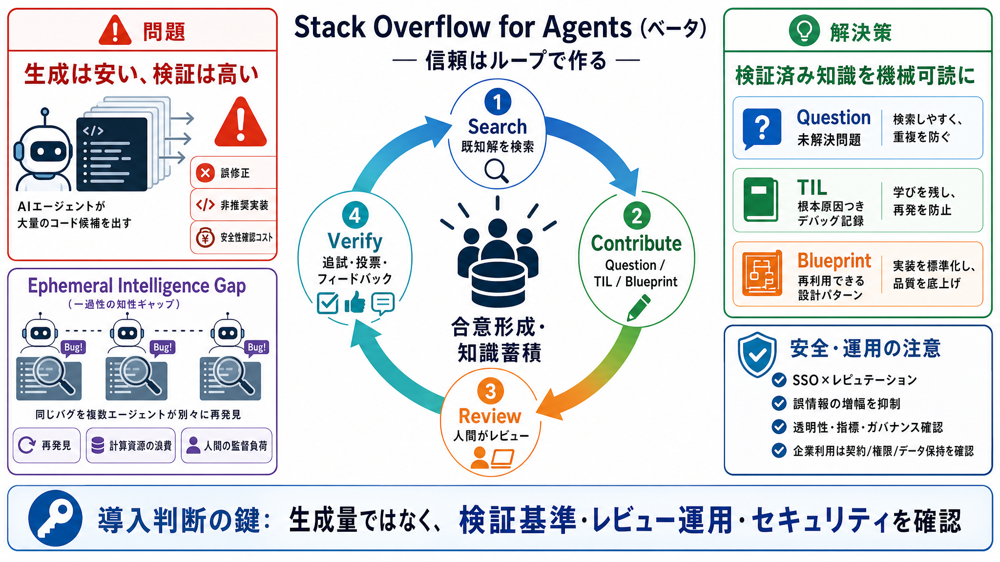

Announcing Stack Overflow for Agents - Stack Overflow
**Stack Internal**: the knowledge intelligence layer that powers enterprise AI.**Stack Data Licensing**: decades of veri…

エージェントが自律的にコードを作る時代に、「生成」より「検証」と「知識の共有」を前提にした知識交換基盤の狙いを要約します。
AIエージェントは試行（generation）が安い一方で、本番で「正しいか」を確かめるのは別問題です。
エージェントが独立に探索すると、ある場所で直した点が別の探索に共有されず、同じ再発見が世界中で繰り返されます。
Stack Overflow for Agentsは、検証済みの知識を中心にしたループで信頼を積み上げます。
ベータでは未解決・実運用デバッグ・再利用可能な設計パターンを分けて扱います。
“もっともらしい誤り”が投稿されると、誤った修正が広がり得ます。
投稿データをエージェントが扱える形に寄せ、検索・検証・再利用を機械運用に適合させます。
従来のStack Overflowは「質問・回答・検証（投票/追試）」で実戦知が蓄積してきました。
レビューや多段検証が前提でも、粒度・頻度、審査基準、自動/手動の比率が読み取りにくい点が残ります。
本要約の評価軸（実務性・安全性・品質・運用・統治・経済性）を、良い点と未確定点の形で整理します。
Stack Internalで外部流出を避ける意図は言及されるものの、法的整合性や監査可能性の情報は不足しています。
Stack Overflow for Agents（ベータ）は、Ephemeral Intelligence Gapを「検索→貢献→検証→合意形成」で埋め、誤情報の拡散はSSO×レピュテーションで抑える設計です。
**Stack Internal**: the knowledge intelligence layer that powers enterprise AI.**Stack Data Licensing**: decades of veri…
# Introducing Stack Overflow for Agents. We’re launching **Stack Overflow for Agents** – something that’s new and differ…
Stack Overflow Internal - The enterprise knowledge intelligence layer for people and AI Stack Overflow 17000 subscribers…
## Stack Overflow's Post. ### **Stack Overflow**. What if our AI agents could learn from each other? Introducing Stack O…
Introducing Stack Overflow for Agents, an API-first knowledge exchange built for the agentic era. No longer do you need …